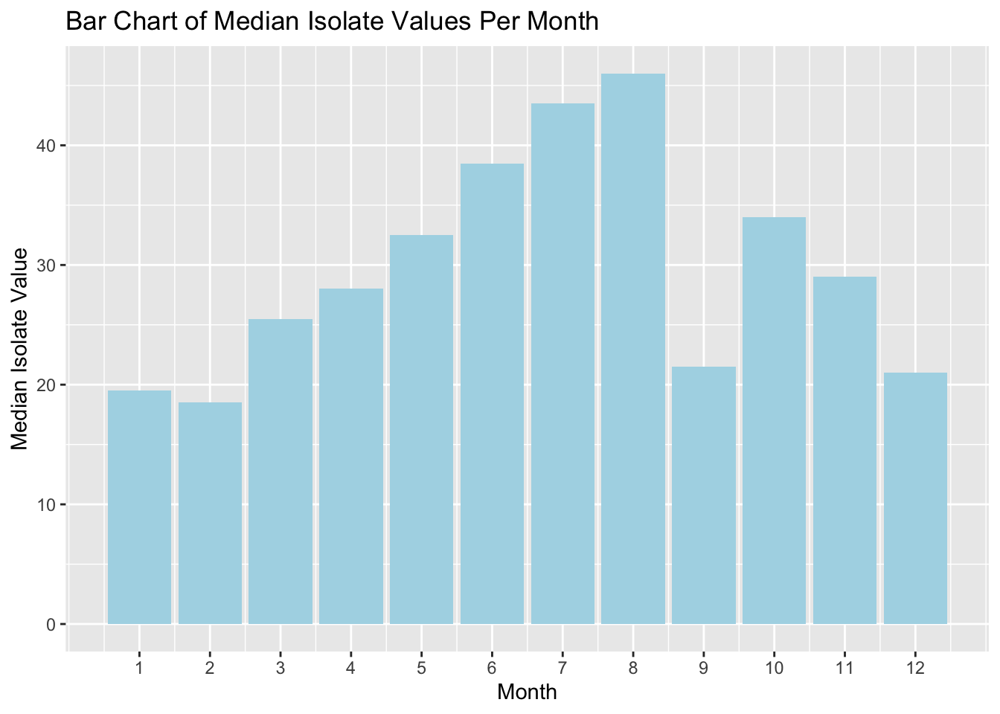
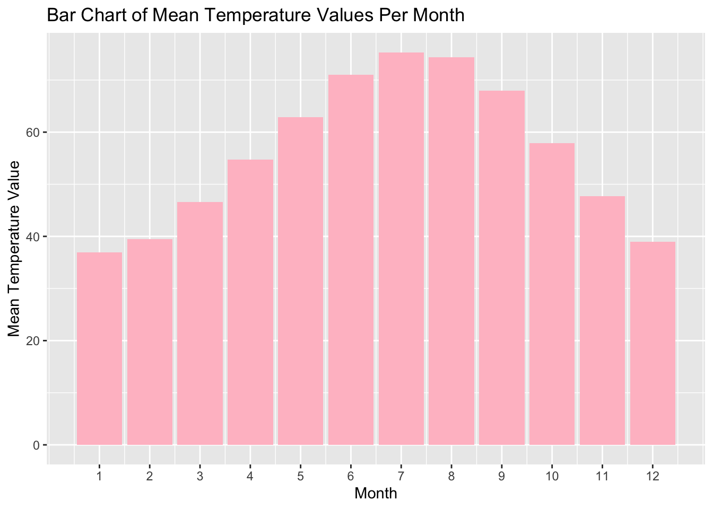
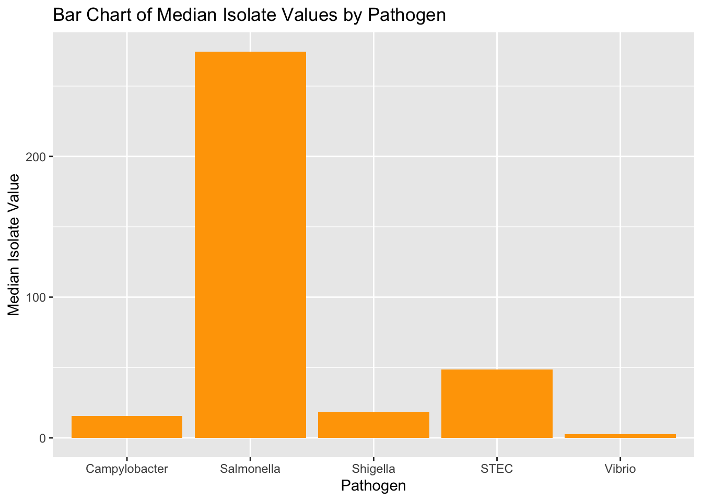

library(ggplot2)
library(data.table)
library(dplyr)
Attaching package: 'dplyr'The following objects are masked from 'package:data.table':
between, first, lastThe following objects are masked from 'package:stats':
filter, lagThe following objects are masked from 'package:base':
intersect, setdiff, setequal, unionlibrary(dtplyr)
library(quarto)
library(knitr)
library(readxl)
library(kableExtra)
Attaching package: 'kableExtra'The following object is masked from 'package:dplyr':
group_rows## Reading in main data and temperature data and merging them.
beam <- data.table::fread("/Users/vikaskunta/Downloads/BEAM_Dashboard_-_Isolates_by_HHS_Region_20231016.csv")
weather_temps_monthly <- read_excel("~/Documents/USC MS/PM 566 Health Data Science/Midterm/weather temps monthly.xlsx")
merge <- beam %>%
left_join(weather_temps_monthly, by = c("HHS_Region", "Month"))
## Summary Statistics of Monthly Temperature and Isolates. Pathogen summary stats included as well.
monthstat <- merge %>%
group_by(Month) %>%
summarize(
Mean_Temp = mean(Temperature),
Median_Temp = median(Temperature),
Std_Dev_Temp = sd(Temperature),
Min_Temp = min(Temperature),
Max_Temp = max(Temperature),
N = n()
)
isostat <- merge %>%
group_by(Month) %>%
summarize(
Mean_Iso = mean(Number_of_isolates),
Median_Iso = median(Number_of_isolates),
Std_Dev_Iso = sd(Number_of_isolates),
Min_Iso = min(Number_of_isolates),
Max_Iso = max(Number_of_isolates),
N = n()
)
patstat <- merge %>%
group_by(Pathogen) %>%
summarize(
Mean_Iso = mean(Number_of_isolates),
Median_Iso = median(Number_of_isolates),
Std_Dev_Iso = sd(Number_of_isolates),
Min_Iso = min(Number_of_isolates),
Max_Iso = max(Number_of_isolates),
)
seasonstat <- weather_temps_monthly %>%
mutate(
season = case_when(
Month %in% c(12, 1, 2) ~ "Winter",
Month %in% c(3, 4, 5) ~ "Spring",
Month %in% c(6, 7, 8) ~ "Summer",
Month %in% c(9, 10, 11) ~ "Fall"
)
) %>%
group_by(HHS_Region, season) %>%
summarize(avg_temperature = mean(Temperature, na.rm = TRUE), .groups = "drop")
seasonstat2 <- seasonstat %>%
mutate(HHS_Region = case_when(
HHS_Region == "Region 1 - Boston" ~ "Boston",
HHS_Region == "Region 10 - Seattle" ~ "Seattle",
HHS_Region == "Region 2 - New York" ~ "New York",
HHS_Region == "Region 3 - Philadelphia" ~ "Philadelphia",
HHS_Region == "Region 4 - Atlanta" ~ "Atlanta",
HHS_Region == "Region 5 - Chicago" ~ "Chicago",
HHS_Region == "Region 6 - Dallas" ~ "Dallas",
HHS_Region == "Region 7 - Kansas City" ~ "Kansas City",
HHS_Region == "Region 8 - Denver" ~ "Denver",
HHS_Region == "Region 9 - San Francisco" ~ "San Francisco",
TRUE ~ HHS_Region
))
## Tables
knitr::kable(monthstat[, 1:7], "simple", caption = "Summary Statistics of Temperature by Month")| Month | Mean_Temp | Median_Temp | Std_Dev_Temp | Min_Temp | Max_Temp | N |
|---|---|---|---|---|---|---|
| 1 | 36.9 | 33.0 | 7.816713 | 27 | 51 | 100 |
| 2 | 39.5 | 35.0 | 7.955050 | 30 | 54 | 100 |
| 3 | 46.6 | 44.5 | 6.759953 | 38 | 58 | 100 |
| 4 | 54.7 | 53.5 | 5.578639 | 48 | 66 | 100 |
| 5 | 62.9 | 61.0 | 5.402020 | 57 | 74 | 100 |
| 6 | 71.0 | 71.0 | 6.244189 | 61 | 82 | 100 |
| 7 | 75.3 | 76.5 | 6.483078 | 62 | 85 | 100 |
| 8 | 74.4 | 75.5 | 6.279677 | 62 | 86 | 100 |
| 9 | 68.0 | 68.0 | 4.517083 | 62 | 78 | 100 |
| 10 | 57.9 | 57.5 | 4.726176 | 52 | 68 | 50 |
| 11 | 47.7 | 46.0 | 5.661362 | 41 | 57 | 50 |
| 12 | 39.0 | 36.5 | 6.624013 | 32 | 51 | 50 |
knitr::kable(isostat[, 1:7], "simple", caption = "Summary Statistics of Isolates by Month")| Month | Mean_Iso | Median_Iso | Std_Dev_Iso | Min_Iso | Max_Iso | N |
|---|---|---|---|---|---|---|
| 1 | 62.28 | 19.5 | 110.09904 | 0 | 609 | 100 |
| 2 | 52.79 | 18.5 | 89.74198 | 0 | 431 | 100 |
| 3 | 68.18 | 25.5 | 114.18215 | 0 | 578 | 100 |
| 4 | 78.52 | 28.0 | 135.66570 | 0 | 724 | 100 |
| 5 | 102.31 | 32.5 | 180.28847 | 0 | 916 | 100 |
| 6 | 123.21 | 38.5 | 231.49419 | 0 | 1344 | 100 |
| 7 | 150.17 | 43.5 | 282.50238 | 1 | 1665 | 100 |
| 8 | 158.66 | 46.0 | 297.95682 | 0 | 1760 | 100 |
| 9 | 109.79 | 21.5 | 247.03708 | 0 | 1756 | 100 |
| 10 | 116.34 | 34.0 | 242.70933 | 0 | 1376 | 50 |
| 11 | 82.12 | 29.0 | 164.26617 | 0 | 943 | 50 |
| 12 | 68.54 | 21.0 | 128.40644 | 0 | 701 | 50 |
## Figures
ggplot(data = isostat, aes(x = Month, y = Median_Iso)) +
geom_bar(stat = "identity", fill = "lightblue") +
labs(x = "Month", y = "Median Isolate Value") +
ggtitle("Bar Chart of Median Isolate Values Per Month") +
scale_x_continuous(breaks = 1:12, labels = 1:12)
ggplot(data = monthstat, aes(x = Month, y = Mean_Temp)) +
geom_bar(stat = "identity", fill = "pink") +
labs(x = "Month", y = "Mean Temperature Value") +
ggtitle("Bar Chart of Mean Temperature Values Per Month") +
scale_x_continuous(breaks = 1:12, labels = 1:12)
ggplot(data = patstat, aes(x = Pathogen, y = Median_Iso)) +
geom_bar(stat = "identity", fill = "orange") +
labs(x = "Pathogen", y = "Median Isolate Value") +
ggtitle("Bar Chart of Median Isolate Values by Pathogen")
season_order <- c("Spring", "Summer", "Fall", "Winter")
seasonstat2$season <- factor(seasonstat2$season, levels = season_order)